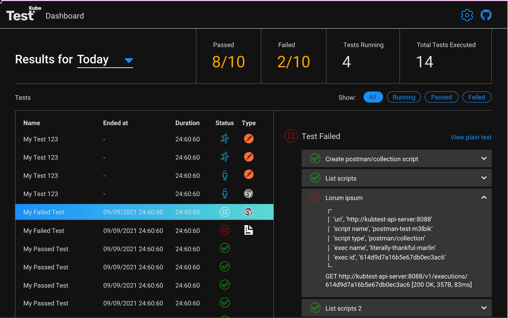

TestKube Dashboard
The TestKube Dashboard provides a simple web-based UI for monitoring TestKube test-results via a web-browser.

It can be accessed at https://dashboard.testkube.io which will prompt for the results endpoint of your TestKube installation in order to show your results (see below on how to find that). Once you have the results endpoint you can append it to the above URL (as an apiEndpoint parameter) for a direct link to the dashboard with your results, i.e.
https://dashboard.testkube.io/?apiEndpoint=...
Alternatively, the dashboard can be opened on your local machine using command sh kubectl testkube dashboard which
will uses port forwarding for accessing your local results endpoint (see more here).
Dashboard results endpoint
To expose the results endpoint currently needed by the dashboard there are 2 options:
- Expose the results endpoint using an Ingress controller and use it in the dashboard at dashboard.testkube.io.
- Install the dashboard together with TestKube.
It can be achieved installing TestKube using helm charts located at github.com/kubeshop/helm-charts.
Prerequisites
Add repo to helm
helm repo add kubeshop https://kubeshop.github.io/helm-charts && helm repo update
Exposing something to the outside world will need an ingress-controller, by default TestKube is using ingress-nginx, any other ingress can be used but this will need advanced configuration(a values file for guidance can be found here).
Configure ingress for results endpoint
helm install testkube kubeshop/testkube --set api-server.ingress.enabled="true"
by default the results are using the path /results so the results will be accessible at ingress_host/results/
The ingress configuration used is available int the TestKube Helm Repo
Installing dashboard
Please note that you can install ingress for dashboard together with api-server ingress with the usage of Helm chart as well:
helm install testkube kubeshop/testkube --set testkube-dashboard.enabled="true" --set testkube-dashboard.ingress.enabled="true" --set api-server.ingress.enabled="true"
Dashbaord talks to api-server via endpoint. Hence api-server will have to be exposed as well.
To get address of the ingress use:
kubectl get ing
HTTPS/TLS configuration
In order to have secure access to the dashboard and results endpoint a certificate should be provided, the helm charts can be configured from the ingress section of the values file like bellow:
ingress:
enabled: "true"
annotations:
kubernetes.io/ingress.class: nginx
nginx.ingress.kubernetes.io/force-ssl-redirect: "false"
nginx.ingress.kubernetes.io/ssl-redirect: "false"
nginx.ingress.kubernetes.io/enable-cors: "true"
nginx.ingress.kubernetes.io/cors-allow-methods: "GET"
nginx.ingress.kubernetes.io/cors-allow-credentials: "false"
# add an annotation indicating the issuer to use.
cert-manager.io/cluster-issuer: letsencrypt-prod
# controls whether the ingress is modified ‘in-place’,
# or a new one is created specifically for the HTTP01 challenge.
acme.cert-manager.io/http01-edit-in-place: "true"
path: /
hosts:
- demo.testkube.io
tlsenabled: "true"
tls: # < placing a host in the TLS config will indicate a certificate should be created
- hosts:
- demo.testkube.io
secretName: testkube-demo-cert-secret
it uses automaticaly generated certificates using Let'sencrypt and cert-manager, but it can be configured for any particular case. Full values file example can be found here.
If there is no need of TLS enabled just omit TLS configuration part.
Though we highly discourage working in non-safe environment which is exposed without usage of TLS-based connection. Please do so only in private internal environemnt for testing or development purposes only.
To specify some specific values to the ingress annotations, Helm "--set" option can be used to pass needed annotations e.g.
helm install testkube kubeshop/testkube --set testkube-dashboard.enabled="true" --set testkube-dashboard.ingress.enabled="true" --set api-server.ingress.enabled="true" --set api-server.ingress.annotations.kubernetes\\.io/ingress\\.class="anything_needed"
It is a better approach to configure a values file with the ingress custom values and call it like:
helm install testkube kubeshop/testkube --values https://github.com/kubeshop/helm-charts/blob/39f73098630b333ba66db137e7fc016c39d92876/testkube/charts/testkube/values-demo.yaml